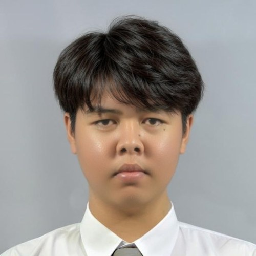
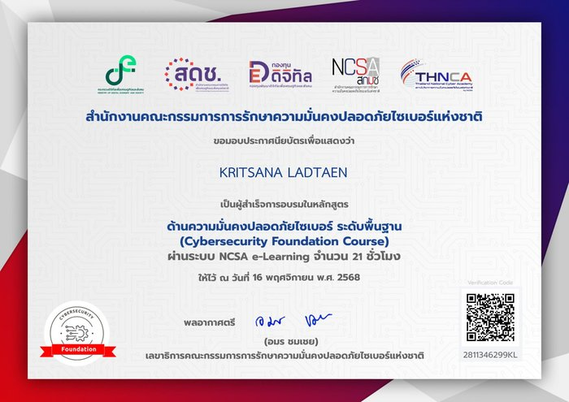
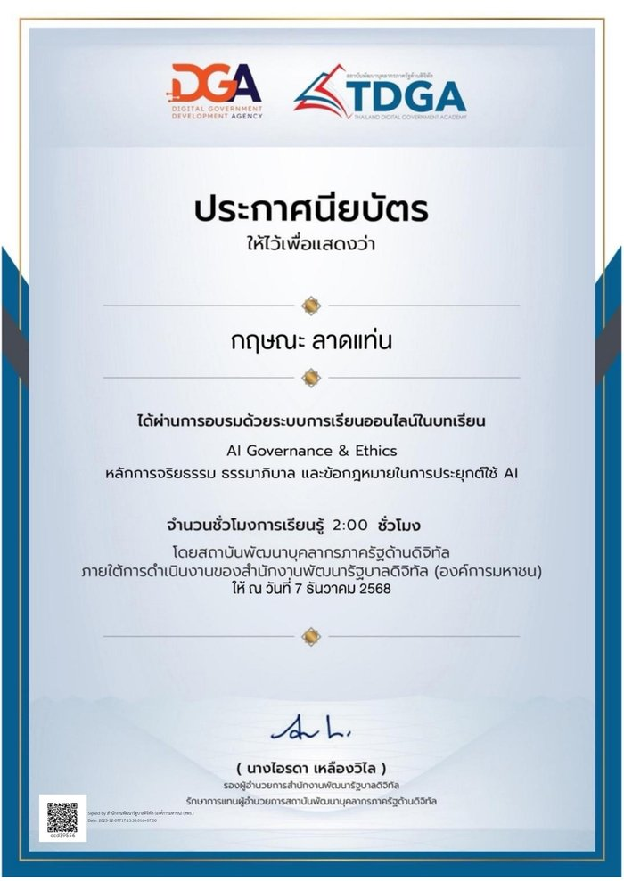
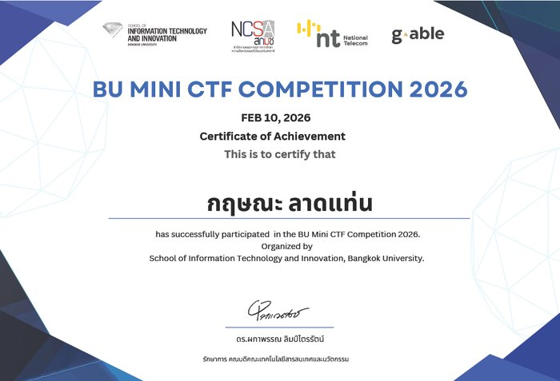
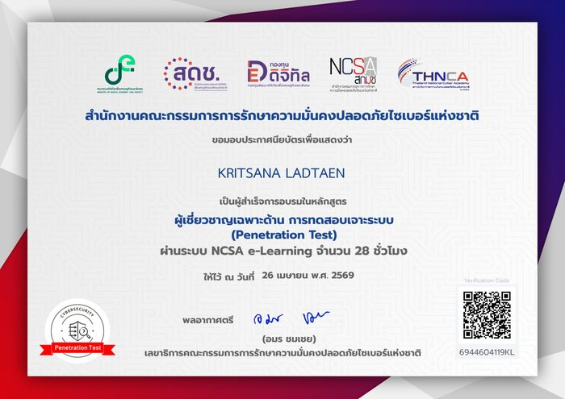

Kritsana
Ladtaen
นักศึกษา คณะเทคโนโลยีสารสนเทศและนวัตกรรม มหาวิทยาลัยกรุงเทพ สาย Data Science & Cybersecurity สนใจงาน Security Monitoring, Penetration Testing และการสร้างเครื่องมืออัตโนมัติด้วย Python

เริ่มสนใจ Cybersecurity และ Data Science จากการลงมือทำจริง — ตั้งแต่แล็บ CTF สไตล์ VulnHub (crack zip, restricted shell escape, privilege escalation) ไปจนถึงการทดสอบเจาะระบบจริงบนแพลตฟอร์ม OffSec Proving Grounds หลายเป้าหมาย และเขียนรายงานอ้างอิง CVE/CWE อย่างเป็นระบบ
โปรเจกต์ที่ภูมิใจที่สุดคือระบบ EDR/XDR Security Monitoring ซึ่งเป็นความร่วมมือระหว่าง Siam.AI Cloud กับมหาวิทยาลัยกรุงเทพ วาง Wazuh + Kafka (KRaft mode) พร้อม dashboard แบบ real-time ด้วย Flask + SocketIO และเขียน detection rule ที่แม็ปกับ MITRE ATT&CK เอง 4 เทคนิค นอกจากงานสาย security แล้วยังชอบเขียนเครื่องมืออัตโนมัติด้วย Python เพื่อแก้ปัญหาที่เจอในชีวิตจริง
Security Monitoring
Blue Team, Detection Engineering
Penetration Testing
Exploitation, Vulnerability Research
Data Science
วิเคราะห์และประมวลผลข้อมูลด้วย Python เช่น log/threat data จากระบบ security monitoring
Automation / Tooling
Scripting, Bots, Image Matching
Systems & Networking
Linux Administration

Cybersecurity Foundation Course
NCSA e-Learning · 21 ชม. · 16 พ.ย. 2568
AI Governance & Ethics
TDGA / DGA · 2 ชม. · 7 ธ.ค. 2568
BU Mini CTF Competition 2026
School of IT and Innovation, BU · 10 ก.พ. 2569